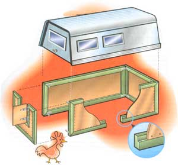
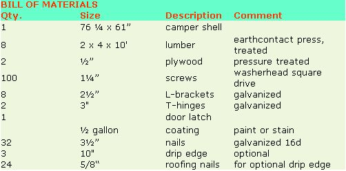

Make a house for your chickens, goats, dogs, or dolls out of an old camper top.
The shell's back is above the panel opening.
An old camper top works as a readymade roof with windows.
If animals will be housed over winter, insulating the roof and running electricity to supply heat with keep them cozy.
Use a 3 3 / 32 " bit to drill pilot holes
Two unrelated dilemmas led me to invent my versatile camper-top cabin. First, I had just traded in my truck and was stuck with the old camper shell. I kept it because it wouldn't have added a dime to my truck's trade-in value, but unfortunately it didn't fit my new truck. There was no chance of selling it, either-countless abandoned camper tops gathering weeds along roadsides told me that lots of folks were in the same boat.
My second dilemma was finding affordable housing for my spring chicks, goslings, and goat kids. Young animals are very susceptible to disease, so it's essential to have housing that can be periodically moved. But just one fiberglass or plastic calf-hutch costs around $300, and I needed at least three.
One day I hit on the idea of making a portable house using the old camper top as a ready-made roof with windows. I added plywood walls so I could get inside without crawling on my hands and knees. The cabin looked super, even though it was made from recycled parts that would otherwise have been an eyesore. The cabin can easily be knocked down for moving and, with slight modification, can be turned into a dog house or neat child's playhouse.
In my area, you can find a used shell for $25. Plywood and hardware bring the total to about $90. A portable calf-hutch of similar size costs two or three times that. So what are you waiting for? Round up your carpentry tools and get started on your own camper-top cabin.
The Bill of Materials above shows what I needed for my camper shell. If your shell is larger, you may need longer 2 x 4s. The two plywood sheets, cut in half lengthwise, are enough for a shell of any size.
I recommend pressure-treated lumber because it resists insect damage. I also recommend getting 2 x 4s one size (two feet) longer than you need. The quality of lumber being what it is today, you will probably need a little leeway to cut out bad spots.
I use square-drive screws because I've lived in the country long enough to know that what I build today may be obsolete tomorrow. These screws let me easily salvage materials for future projects since, compared to nails and other kinds of screws, they chew up less wood-and are less likely to get chewed up themselves-during frequent knocking down and reassembly. They also don't require pilot holes, so projects go together faster.
The L-brackets are used to hold the walls together. The hinges and latch let you close the door to keep out night-time marauders and weather. Add a drip-edge, if you wish, so rainwater won't run down the walls. The walls will dry faster after a storm, reducing water damage.
If you wish to paint or stain the wood, which is entirely optional, you can either apply the paint or stain to each panel individually, or to the whole project after assembly is complete.
• carpenter's hammer
• 7¼” power saw
• power drill, with square power bit
• carpenter's square
• flat rasp, to smooth rough corners
• framing square
• sandpaper, medium
• two clamps, throats at least four inches
• two saw-horses
Getting Started
Start by cutingt a ½ x ¾-inch strip from one edge of each 2 x 4. For this, you can use a table saw with a dadoo attachment, but I prefer a power saw so I will end up with eight ½ x ¾-inch wooden laths that I can use for some other project. When you use a dadoo, all you get is sawdust.
To cut a strip with a saw, clamp the wide face of a 2 x 4 flat to the saw-horses and make a½-inch deep cut, ¾ inches from the edge. Cut all eight 2 x 4s the same way. Then, clamp the narrow face to the saw-horses and make a ¾-inch deep cut, perpendicular to the first. Repeat for all eight 2 x 4s.
Since camper shells come in a variety of sizes, measure the length and width of yours, and transfer these dimensions to the camper top sketch above. Use this sketch as a guide for cutting your 2 x 4s to frame the cabin's side and rear walls.
Before assembling each panel, use a 3/32-inch bit to drill pilot holes into the ends of the 2 x 4s, as indicated above. (Don't skip this step, or the wood will surely split.) Using two nails at each corner, assemble three frames-two for the side walls and one for the back wall. Use your framing square to make sure that each frame is perfectly square.
Measure the inside of each frame, cut a piece of plywood to fit, and screw it down. (Theoretically, you could cut the plywood in advance, but you'll get a much snugger fit if you measure each frame after it's assembled.) Now that you have three rigid wall-panels, find a level spot and start assembling your cabin.
Using L-brackets and more screws, arrange the three panels in a U-shape and fasten them together. To keep things square and plumb, use a temporary brace across the open end. If you're adding a drip edge, now's the time to install it with roofing nails.
Place the camper shell on top of the three walls, its back oriented toward the open end, and screw it down. (If you plan to move your cabin often, here you may prefer to substitute carriage bolts and wing nuts with washers.)
Now you're ready to build the front wall, which is at the rear end of what used to be a camper. The design of this front piece depends on your cabin's purpose. The open front-panel in the sketch above shows the design I use for chickens and goat kids.
For chickens, additional interior furnishings include a hanging feeder, a roost, and-if you plan to house laying hens in your cabin-nest boxes. Goat kids need a hay rack, a grain bin, and a feeder for mineral salt and soda. In both cases, I keep the waterer just outside the door where spills won't dampen the interior. If animals will be housed over winter, insulating the roof and running electricity to supply heat keeps them cozy.
If the cabin is for your dog, turn the front panel upside down so the opening is at the bottom. Recess the panel to give Rover a porch for food; add a detached wooden floor to keep him warm and dry.
If you're creating a child's playhouse, deepen the door opening until only a small sill remains at the bottom. To maximize interior wall space, move the door to one side. Add curtains and a set of pint-sized furniture, and you'll have a playhouse no child can resist.
Allan Damerow operates a diversified small farm in middle Tennessee.
If square drive-screws aren't yet offered in your local hardware stores, you can find them by contacting:
Falcon Tool and Fastener, 6417 Penn Avenue South, Richfield, MN 55423, 800-544-9460.
McFeely's Square Drive Screws, 712 12th Street, PO Box 3, Lynchburg, VA 24505-0003, 800-443-7937.
|
 ILLUSTRATION BY SCOTT MACNEILL |
 |
|